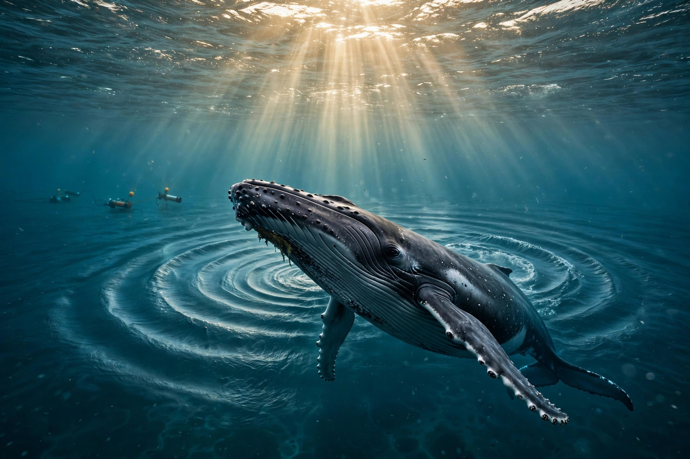

Features · AGI Future Foundation
The WAVE — Listening to the Earth
Most of the planet is talking, and most of us are not listening. Not because we do not care, but because the conversation is happening in frequencies we cannot hear, in oceans we cannot enter, in forests at hours when we are asleep, in patterns too long and too layered for a single human ear to hold. The WAVE starts from a simple, almost embarrassingly obvious idea: point a microphone at the living world, keep it there, and teach a machine to notice what changes. Then, maybe, we will finally hear what the Earth has been saying all along — not in words, because animals do not speak in sentences, but in presence and absence, in rhythm and silence, in the slow drift of a soundscape as a place heals or falls apart. This feature is about that listening, about the open tools built to do it, and about the long distance between a beautiful idea and a working system that earns the trust of the people whose forests and seas it would record.

AGI Future Foundation is a California Nonprofit Public Benefit Corporation, Entity No. B20260196664, Articles filed 2026-04-24, EIN assigned 2026-05-07. No IRS 501(c)(3) determination letter is in the files reviewed, so this feature does not claim tax-exempt status and does not claim that any donation is tax-deductible.
The sound of a planet talking to itself
Imagine standing in a forest before dawn, before the human day has started, and doing nothing but listening. At first there is almost nothing, or so it seems. Then the ear adjusts, the way eyes adjust to a dark room, and the nothing resolves into layers. Something calls from high in the canopy, and something answers from lower down. An insect layer starts up, steady as a held note, and underneath it a softer texture, wind in leaves, water somewhere out of sight, the small dry sounds of a place waking up. A human standing there can hold perhaps a minute of it in attention before the mind wanders, before a phone buzzes, before the cold or the mosquitoes win. A microphone does not wander. A microphone stays. And a microphone, left for a season, hears the things a visitor never will: the night the frogs did not come back, the week the dawn chorus started ten minutes later, the month a new sound arrived and never left, the year the whole texture thinned, like a radio losing its signal one station at a time.
The ocean makes the case most sharply, because the ocean is where human senses fail most completely. We are a visual species that lives on land, and the sea is opaque and dark and deep, and most of what happens in it happens out of sight. Sound, though, travels beautifully in water, far further than light, and the animals that live there have built their whole social world out of it. Whales call across basins. Small animals click and buzz and drum in a darkness we cannot picture. A hydrophone dropped into that world is not a gadget; it is a window, the only kind that works at depth. The name at the centre of this feature — belugasounds — points straight at that window. A beluga is a white whale of cold northern waters, a famously vocal animal, an animal whose calls have earned it a nickname in popular writing as the canary of the sea. The name belugasounds does not, by itself, prove anything about what has been recorded or where or how well. It is a name, and names are intentions. But it is a well-chosen intention, because it picks the hardest, most revealing case: a social, vocal, intelligent animal in a place humans can barely visit, whose voice is the most reliable trace of its life.
There is a cultural point here that matters as much as the technical one. For most of human history, the natural world has been treated as scenery — beautiful, valuable, but fundamentally silent, a backdrop for the human story. Bioacoustics quietly reverses that. It treats the living world as a speaker, not a backdrop, and treats human beings as late arrivals to a conversation that started long before us. That reversal is why this work lands so hard with people who have never read a scientific paper on animal communication. It does not ask you to learn a new theory. It asks you to listen, and listening is something a child can do. Put on headphones, press play on a recording made under the sea or in a rainforest at dawn, and something shifts. The world stops being a picture and becomes a place, full of other lives doing other things for their own reasons. A foundation that wants to build artificial general intelligence with a public-benefit purpose could do worse than start there, with humility: before we build minds that speak, let us learn to hear the minds that already do, in languages we did not invent and cannot yet translate.
What WAVE is, in plain language
Strip away the poetry and the acronym, and WAVE is a listening system: a way of taking in sound from the living world, making sense of it with software, and putting that sense where people can use it. The public listing for the project, under the name bioacoustics-cloud, describes it in one line that does most of the work: BioDao, the bioacoustics DAO, with WAVE translating the voices of Earth in real time, and with belugasounds and the Wild Animal Voice Engine as the open core. Every clause of that line deserves a slow reading, because each one carries a different claim, and they are not all equally established.
The third clause — belugasounds plus the Wild Animal Voice Engine as the open core — is the most concrete part of the line, and the most interesting, because open core is a commitment about how the work is shared. An open core means the central engine, the part that does the actual listening and understanding, is open: its code can be read, checked, improved, and reused by others, rather than locked inside a single company. That matters enormously for a project about the living world, because the living world does not belong to one company, and the knowledge of how to listen to it should not either. An open engine invites scrutiny, and scrutiny is what keeps a listening system honest: other researchers can test whether it really recognises what it claims to recognise, whether it works on sounds from places it was not trained on, whether it fails gracefully or confidently wrong. The name Wild Animal Voice Engine widens the frame beyond a single species, which is important, because a system that only works on one animal in one place is a demonstration, not a tool. Whether the engine, as it stands, works beyond its starting case is not established in the materials reviewed, and this feature does not claim that it does. What is established is the intention: an open engine, for wild animal voices generally, with beluga sounds as a starting point named in the open.
There is one more piece of plain language that belongs in this section, and it is the separation that the status banner already states. WAVE and bioacoustics.cloud are live as a separate project. The live site exists, and the project has its own presence, and that presence is separate from the Foundation's portfolio as verified. It has not been verified as intaked into the Foundation portfolio, which means this feature cannot present WAVE as a Foundation asset, a Foundation product, or a Foundation achievement. It can present WAVE as a project the Foundation's planning touches — through the BioDAO label, through Series 18, through the shared language of DAO governance and open tools — and as a project whose direction fits the Foundation's stated purpose. The difference between fits and belongs to is the whole of the honesty rule here. A reader who finishes this feature should be able to say, without hesitation, that WAVE is a real, separate, live project with an ambitious description, and that its relationship to the Foundation is planned and labelled, not established by a document this feature can cite. That is not a small thing to get right, because the moment a live project is claimed as a portfolio asset without the paperwork, both the project and the Foundation lose something: the project loses its independence, and the Foundation loses its credibility.
Belugasounds and the Wild Animal Voice Engine
Every serious listening project needs a first animal, and the choice of the first animal tells you a lot about the project. A project that starts with a laboratory animal, or with a recording made in a zoo, is starting with the easy case: controlled conditions, known individuals, clean sound. A project that starts with a wild, social, vocal marine mammal is starting with the hard case on purpose, and that is a sign of ambition, or of confidence, or of both. The name belugasounds announces that choice without apology. It says: we are starting in the cold water, with an animal that lives by sound, and we are going to learn to hear it there, where it actually lives, not in a tank where it is convenient to record.
Why does that choice matter? Because belugas, as animals, are a test of almost everything a listening system has to do. They are social, so their sounds are not just individual signals but part of an ongoing exchange, with calls and responses, with overlapping voices, with the kind of conversational texture that a simple classifier, trained to spot a single call type, will flatten into noise. They are vocal in varied ways, producing a range of sounds that do not fit neatly into one category, which means a system has to handle variety without forcing it into boxes that do not exist. They live in an environment full of other sound — water, ice, boats, other animals — so the system has to separate the signal it cares about from a background that is never quiet and never the same twice. And they move, in groups, across distances, so the system has to track presence over time and space, not just detect a single event and stop. A system that can do all of that, even imperfectly, for belugas in the wild has learned most of what it needs to learn for other animals too. A system that can only do it for a single animal in a quiet pool has learned very little.
The Wild Animal Voice Engine is the other half of the open core, and its name does two things at once. The word wild insists that the target is animals in their own places, living their own lives, not animals in captivity performing for a microphone. The word engine insists that this is infrastructure, not a single experiment: a reusable piece of software that takes in sound and puts out understanding, that can be pointed at a new animal or a new place without being rebuilt from scratch. Engines are judged differently from experiments. An experiment is judged by whether it worked once, under the conditions its authors chose. An engine is judged by whether it keeps working when conditions change, when the sound is worse, when the animal is different, when the person using it is not the person who built it. That is a higher bar, and it is the right bar, because the living world does not come in laboratory conditions. It comes in weather.
BioDAO, Series 18, and the question of who governs listening
Listening is never just a technical act. Someone decides where the microphones go, and that decision decides whose world gets heard and whose does not. Someone decides who can hear the recordings, and for how long, and for what purposes, and that decision decides whether listening serves the people who live alongside the animals or serves only distant researchers and distant companies. Someone decides what happens when the listening finds something inconvenient — a habitat in decline, a population under stress, a sound that suggests harm — and that decision decides whether the system is a witness or a decoration. Those are governance questions, and they are the reason the BioDAO idea matters, and the reason it is also the part of this story most likely to be underestimated.
BioDAO.blockchain DAO is W3 Series S18, named in the April 2026 internal W3 series list, which names 33 sub-series, Series 1 through 33, contiguously. The list is a three-page internal printout dated 2026-04-03, not a Wyoming Secretary of State filing, and it proves no filing, no legal designation, no bank account, no EIN, and no Steward Council per series. That is the whole of what the list establishes about Series 18, and this feature will not pretend it establishes more. The series page for S18 says the same thing in its own words, and it adds a useful clarification: the only link between Series 18 and existing work that the files reviewed provide is the site copy labelling it BioDao with WAVE bioacoustics in parentheses. That label is a pointer, not a specification. It does not say what WAVE measures, who uses it, what data it holds, or what the series would add to it, and the series page is explicit that it does not fill in those gaps by invention. This feature follows the same rule.
Then there is the blockchain itself, and here the series page is admirably blunt: a ledger for biological data would need to answer who writes, who reads, how consent works for data derived from people or from places they steward, how errors are corrected, and how privacy and biosecurity rules are met. Biological data is often sensitive, sometimes identifiable, and sometimes subject to rules about where it may be stored and shared. Those questions have to be answered in a governing document, with counsel, before a single record is written, because a ledger adopted first and governed later creates obligations nobody agreed to. The point is not that blockchain is the wrong tool; it is that the tool is the easy part and the governance is the hard part, and a project that leads with the tool has the order backwards. A record that cannot be corrected is a liability when the record is wrong, and records about living things are often wrong in the beginning, because listening is hard and animals do not perform on cue. A system that treats an early, mistaken entry as permanent truth will mislead everyone who relies on it.
One more distinction belongs in this section, because it is the easiest mistake to make about this series, and the series page goes out of its way to prevent it. The anchored Biota world is not this series. Biota.blockchain has an anchored world at coordinates -38.71260348427612, -27.248278366617797, but Biota does not appear in the April 2026 internal W3 series list and has no series number. It must not be assigned to Series 18, or to any series, on the strength of a similar-sounding name. If Biota and this series are ever related, that relationship would need to be written down and sourced; it cannot be inferred from the word bio appearing in both names. Series 18, as it stands, has no anchored metaverse fabric yet: no coordinates, no fabric JSON file, no hosted assets, and no RP1 attach are in the files reviewed for this series. Zero worlds are live on RP1, for the whole W3 programme as of the files reviewed, not just for this series. Whether Series 18 even needs a metaverse presence is an open question, not a settled one, and a shared space for listening to and visualising bioacoustic data is an example of what such a presence could be, not a commitment that it will be built. The honest statement is short: no anchor yet, and any future anchor will need its own coordinates, its own fabric, and its own verified render, cited with a date.
What listening can do, and what it cannot
It is tempting, when writing about a listening machine, to make it sound like a mind reader, and that temptation should be resisted, because it does a disservice to both the machine and the animal. A listening system can do a great deal, and the great deal is worth describing precisely, without inflating it into magic. It can notice presence: an animal was here, at this time, in this place, making this kind of sound. That sounds modest, and it is the foundation of everything else, because presence over time is how you learn whether a population is stable, growing, shrinking, or gone. It can notice pattern: calls that come in sequences, choruses that rise and fall with the day or the season, sounds that cluster around feeding or breeding or alarm. Pattern is how you move from a list of detections to a picture of a life. It can notice change: a chorus that starts later each spring, a call type that disappears, a new sound that arrives and stays, a silence where there used to be sound. Change is the most valuable thing a long-term listening system can offer, because change is what a single visit cannot see and what a human memory cannot hold reliably across years. And it can do all of that at a scale and a persistence no human team can match, sitting through the night, through the winter, through the years when funding is thin and attention wanders.
What it cannot do, at least not in any sense this feature can verify, is understand meaning the way a speaker understands meaning. An animal's call is not a sentence with a dictionary definition, and a system that labels a call has not learned what the animal meant by it. It has learned that a sound with certain acoustic features tends to occur in certain circumstances, which is useful and which is not the same as understanding. The distinction matters because the decisions that follow from listening are human decisions, and they need to be made with the uncertainty intact. A system that says a pod is present is useful. A system that says a pod is distressed, or happy, or planning to move, is making a claim about an inner life that it has no direct access to, and that claim should be treated as a hypothesis to be checked against other evidence, not as a fact to be acted on alone. The best listening systems will be humble about this, and will present their findings with the confidence attached, and with the gaps visible. The worst will hide the uncertainty behind a clean dashboard and a confident label, and will be believed precisely because they look certain.
The open questions
The second set is about the people. Who decides where the microphones go, and who is consulted before they go there? Who owns a recording made in a community's waters or forest, and who can use it, and for what, and for how long? What happens when a recording captures a human voice, or a human activity, alongside the animal sounds — is that recording kept, deleted, or anonymised, and who decides? How do the people who live alongside the animals benefit from the listening, in concrete terms, not in the abstract language of shared benefit? Is there a written agreement with any community, any research institution, any conservation group, or is the work, so far, a technical project looking for its human relationships? The materials reviewed for this feature do not answer these questions, and this feature does not pretend otherwise. But the questions are the work, and a future version of this feature should be able to answer them with names and dates and documents, not with aspirations.
The third set is about the DAO and the record. If BioDAO, Series 18, is ever formed, what exactly would it govern, and what would it leave to the project team, to the communities, to the researchers? What would be recorded on a blockchain, and what would be kept off it, and why? How would an error in the record be corrected, and who could correct it, and how would a correction be visible to everyone who relied on the original entry? How would consent be recorded, and withdrawn, and how would withdrawal be verified — what is deleted, what is retained as a record that consent was once given and then withdrawn, and who checks that the deletion actually happened? Which chain, if any, and why that one rather than a signed database with an audit log, which is simpler, cheaper, and easier to correct? These questions have no default answers, and the worst outcome would be to adopt a ledger first and discover the questions later, when the obligations are already written in a form that cannot easily be changed.
The fourth set is about the relationship between WAVE and the Foundation, because that relationship is the reason this feature sits on the Foundation's site at all. What would intaking WAVE into the Foundation portfolio actually mean, in legal and practical terms? Who would decide it, and on what evidence, and what would change for WAVE and for the Foundation if it happened? Would WAVE remain a separate project with its own governance, or would it become a series with a Steward Council and a mission agreement? What would the Foundation add that WAVE does not already have, and what would WAVE add to the Foundation that the Foundation does not already have? Is there a written agreement, a memorandum, a conversation on record, or is the connection, so far, a label on a site and a shared direction? The status banner at the top of this feature states the verified position: not verified as intaked. The open question is what the path from that position to a verified relationship would look like, and who would walk it, and when. Until that path is walked and documented, the honest description is the one this feature gives: a separate live project, a planned series, and a connection that is labelled but not established.
What this is / What it isn’t
What this is
- A magazine feature about an idea worth building: listening to the living world with open tools, and turning sound into understanding that people can act on.
- A description of WAVE as the project describes itself — the project describes WAVE as translating the voices of Earth in real time — with belugasounds and the Wild Animal Voice Engine as the open core, as stated in its own listing.
- A plain statement of separation: WAVE and bioacoustics.cloud are live as a separate project, not verified as intaked into the Foundation portfolio.
- A planned series, BioDAO.blockchain DAO, Series 18, named in the April 2026 internal W3 series list, intended and planned, not formed, funded, or offered.
- An honest account of what is not established: how well the listening works, where it listens, who uses it, and what it has found.
- A set of open questions about consent, governance, validation, and the path to any verified relationship between WAVE and the Foundation.
What it isn’t
- It is not a claim that WAVE is a Foundation product, asset, or achievement. No intake document is cited, because none is in the materials reviewed.
- It is not a report of results. No deployment, no dataset, no accuracy figure, no user count, and no finding is claimed, because none is verified in the materials reviewed.
- It is not a conversation with an animal. No translation is presented as a verified understanding of what an animal meant.
- It is not a DAO that exists. No vote, treasury, token, council, or operating agreement for Series 18 is claimed.
- It is not a metaverse world. Series 18 has no anchored fabric, no coordinates, and no RP1 attach, and zero worlds are live on RP1.
- It is not a claim about the wave-site repository, which is empty, with no content at all — not a built site.
- Only 8 of the 33 series have any repo coverage at all, so this feature does not imply code exists where it does not.
- It is not an offering, and it is not legal, tax, or financial advice. No investment terms, price, return, or deadline appears in this feature.
Where to see it
The project, in its own words and code: the bioacoustics-cloud repository, at github.com/AGIFutureFoundation/bioacoustics-cloud, where the project describes WAVE, belugasounds, and the Wild Animal Voice Engine. The live site, bioacoustics.cloud, is a separate project site. Start with the repository listing and the project's own description, and treat the description as the project's account of its ambition, not as an independent verification of its results.
A separate empty shell, not a built site: the wave-site repository is empty — no content at all — and this feature does not describe it as a built site. Separately, the bioacoustics-cloud README says its content was migrated from a live Vercel-hosted site; that is the repo's claim, and no live check was done, so this feature does not present a live Vercel site as a verified fact.
The planned series, on this site: BioDAO.blockchain DAO — W3 Series S18, which carries the status banner, the filing facts, and the careful distinction between Series 18 and the unnumbered Biota world. Read the series page alongside this feature: the feature is the story, the series page is the record, and the record is deliberately narrower than the story.
The wider list: all 33 series, where Series 18 sits among its neighbours, and where the April 2026 internal list is described as the source for every name and number. If you want to check a claim in this feature, start there, and then ask for the document behind the claim — a filing, a designation, an agreement, a published validation — rather than taking the feature's word for it.
Get involved / contact
If this listening work interests you, the route is a conversation, not a transaction. Write to x@agifuturefoundation.org and say who you are, what you do, and what you would like to explore — research, a future partnership, volunteering, or a question about the Foundation's mission. A human steward will read it. Please do not send money, do not ask for investment terms, and do not treat this feature as an invitation to invest: there is no offering here, no price, no terms, and no return is promised or implied.
What is genuinely useful at this stage is specific, verifiable help: a named contact in bioacoustics, conservation, or community stewardship; a written source that corrects or confirms something in this feature; a question that exposes a gap in the plan; or an offer to review a draft governance document. General expressions of interest are welcome, but they do not create a relationship, a membership, or an obligation on either side. The Foundation's contact address above is the only contact route this feature offers, and no other person is named here as a contact, a founder, a director, or a partner for this work, because no such appointment is verified.
Nothing in this feature is legal, tax, or financial advice, and no signing, membership, payment, investment, or offering is made here. BioDAO.blockchain DAO, Series 18, is intended/planned, not formed, funded, or offered. WAVE and bioacoustics.cloud are separate and not verified as intaked into the Foundation portfolio.